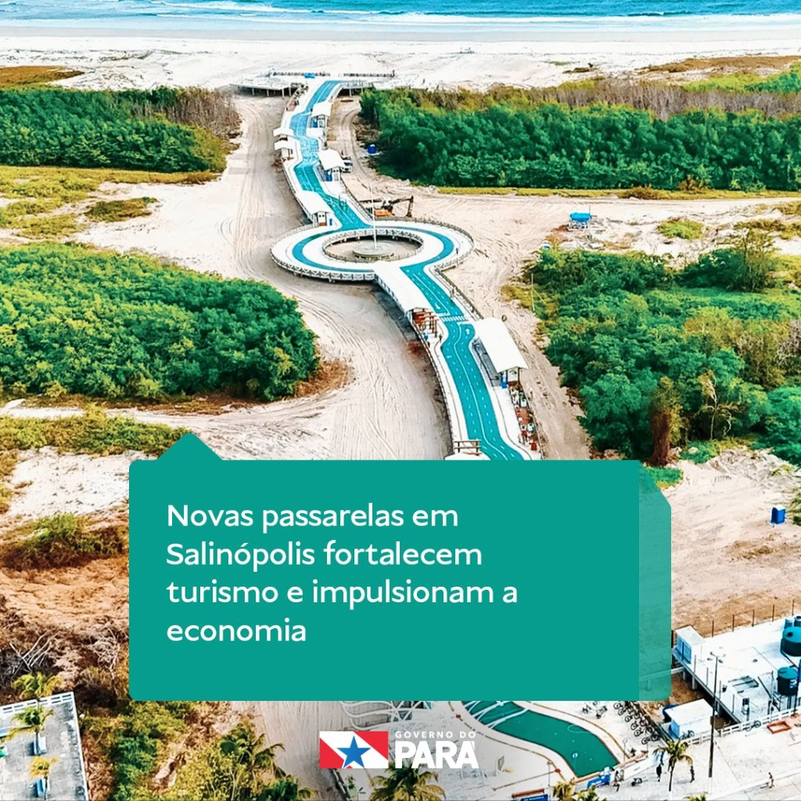
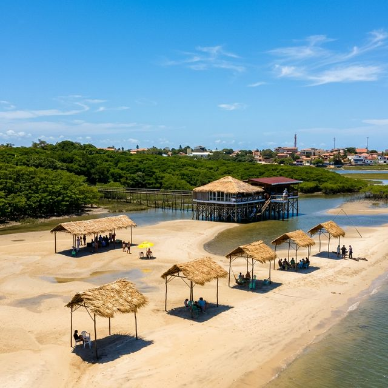
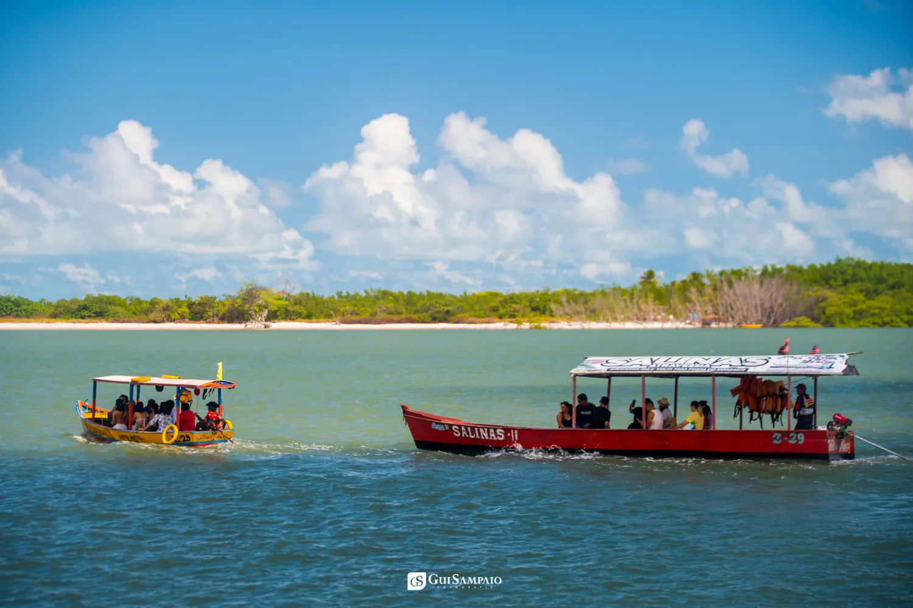
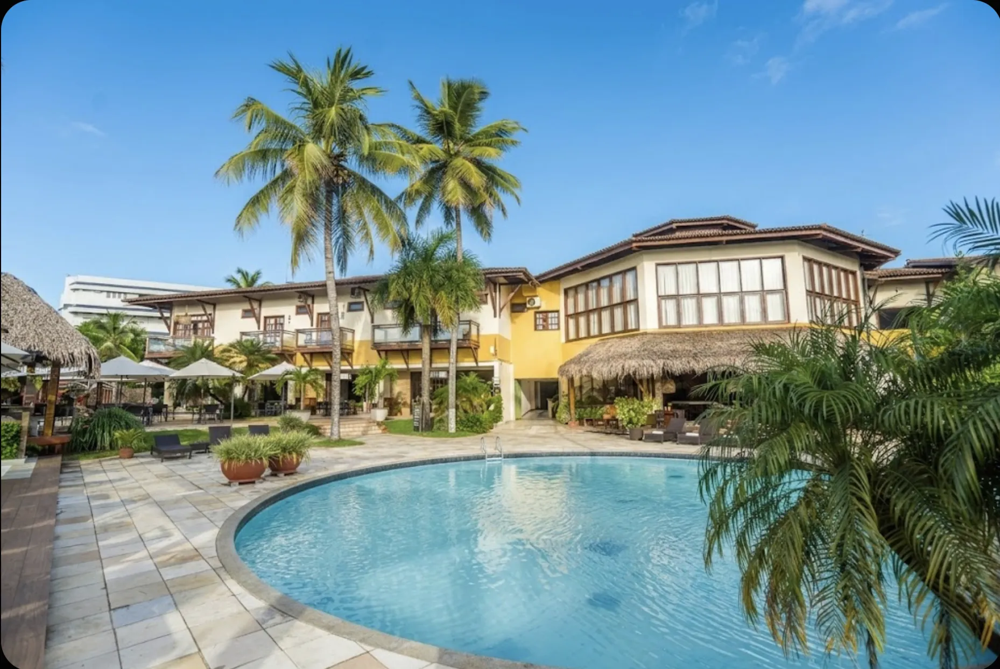

Todo paraense sabe: quando dezembro chega, a estrada para Salinas enche. São 220 km de Belém e, na última semana do ano, parece que a capital inteira resolve fazer o mesmo caminho. Não é exagero — Salinópolis é, ano após ano, o destino mais procurado do Pará para a virada.
O motivo é simples. Em Salinas você passa o réveillon com o pé na areia, dorme ouvindo o mar e acorda no dia 1º já de frente para a praia. Não precisa escolher entre festa e descanso: aqui dá para ter os dois no mesmo fim de semana.
Este guia é para quem está planejando a virada 2027 em Salinas e quer saber, na prática: como é a noite do dia 31, o que fazer nos dias seguintes, o que levar em conta antes de reservar e onde se hospedar.
Como é a noite da virada em Salinas
A virada em Salinópolis acontece em dois lugares ao mesmo tempo.
Na orla do Maçarico, a cidade faz a festa pública. É ali, no calçadão revitalizado, que a Prefeitura monta o palco do show da virada — gratuito, com entrada franca. No réveillon passado, o show começou às 23h e seguiu madrugada adentro. A programação de 2027 costuma ser anunciada na segunda quinzena de dezembro; vale acompanhar os canais da Prefeitura de Salinópolis.

Nas praias do Atalaia e do Farol Velho, a virada é de barraca, carro na areia e som ligado. É o réveillon de grupo de amigos, mais solto, mais barulhento, e com a estrada de volta para a cidade lotada depois da meia-noite.
E tem um terceiro jeito, que é o que a gente faz aqui: a festa dentro do hotel. Ceia, open bar, banda e DJ, sem precisar pegar carro, sem fila, sem procurar lugar para estacionar. À meia-noite você está na pista, à uma da manhã está na piscina, e às duas está na cama a 30 metros dali.
Uma dica que vale ouro: fique a pé da orla
Na noite do dia 31, Salinas não tem trânsito — tem engarrafamento. Quem se hospeda longe da orla passa a virada dentro do carro ou pagando caro por um mototáxi. Quem fica na parte alta da cidade, perto do Maçarico, vai a pé para o show, volta a pé e ainda consegue passar na praia de madrugada.
O que fazer nos dias 1, 2 e 3 de janeiro
A virada é só a primeira noite. O que faz o réveillon em Salinas valer a viagem é o que vem depois.
Dia 1º — o dia de não fazer nada. Café da manhã tarde, piscina, praia. Salinas no dia 1º é silenciosa até o meio da tarde. Se tiver maré baixa, a Praia do Solar aparece bem na frente do hotel: areia firme, mar calmo, quase ninguém.

Dia 2 — o passeio de barco. É o programa que mais recomendamos para quem vem pela primeira vez. Sai do trapiche do hotel, passa pelo manguezal do rio Arapepó e chega na Ponta do Espadarte, a praia mais bonita e mais vazia da região. Escrevemos um guia completo sobre as melhores praias de Salinópolis — o Espadarte é a nossa favorita.

Dia 3 — Atalaia e volta. Quem fica até domingo aproveita para conhecer o Atalaia com calma, almoçar peixe frito numa barraca e pegar a estrada no fim da tarde, quando o fluxo de volta já diminuiu.
Para quem quer um roteiro dia a dia mais detalhado, temos também o que fazer em Salinópolis em 3 dias.
5 coisas para saber antes de reservar
- Reserve cedo. O réveillon é a data que mais lota em Salinas. Os hotéis da orla fecham a ocupação em dezembro, e os últimos apartamentos saem pelo preço mais alto. Quem reserva em outubro ou novembro paga o mesmo valor e ainda escolhe a categoria.
- Conte 3 noites, não 1. A maioria dos pacotes de réveillon em Salinas tem mínimo de 3 noites (31/12 a 03/01). Isso não é capricho: é o que faz o fim de semana render. Chegar no dia 31 e ir embora no dia 1º é passar a viagem inteira na estrada.
- Chegue cedo no dia 31. A PA-124 enche a partir do meio-dia. Chegando antes do almoço, você faz check-in, vai à praia e se arruma para a festa sem pressa. Se puder, chegue no dia 30 — a noite anterior é bem mais barata.
- Pergunte o que está incluso. "Réveillon" em anúncio de hotel pode ser só a diária. Confira se ceia, bebida, festa e passeio estão no pacote ou se são cobrados à parte. A conta muda muito.
- Vai com criança? Verifique a política. Alguns hotéis cobram a ceia integral para crianças. Outros, como o Solar, não cobram nada até 6 anos. Faz diferença no orçamento da família.
Onde ficar: o Réveillon Solar 2027

O Hotel Solar recebe hóspedes em Salinas desde 1973. Fica na parte alta da cidade, de frente para o mar, perto o suficiente da orla para ir a pé e longe o suficiente para dormir em silêncio. É o nosso evento mais procurado do ano — e o que mais nos orgulha organizar.
Assista à chamada do Réveillon Solar 2027 no Instagram
A chamada oficial do Réveillon Solar 2027. Siga @hotelsolar.
O pacote Réveillon Solar 2027 são 3 noites, de 31 de dezembro a 3 de janeiro, com tudo o que a virada precisa já dentro:
- Quinta, 31/12 — Check-in, tarde de praia e a Festa da Virada: ceia, open bar, DJ e show da banda Zona Rural
- Sexta, 01/01 — Café estendido, piscina e praia sem compromisso, sunset com música ao vivo
- Sábado, 02/01 — Passeio de barco, praia, noite com música ao vivo
- Domingo, 03/01 — Café da manhã e check-out
O que mais você precisa saber:
- Crianças até 6 anos não pagam
- Parcelamento em até 6x no cartão
- Café da manhã incluso todos os dias
- Acesso à Praia do Solar e ao restaurante Reserva Solar, pé na areia
Valores das 3 noites, por apartamento:
| Categoria | Pessoas | 3 noites |
|---|---|---|
| Suíte Casal | 2 | R$ 5.600 |
| Suíte Triplo | 3 | R$ 6.400 |
| Suíte Sacada Vista Mar | 3 | R$ 7.100 |
| Suíte Quádruplo | 4 | R$ 7.400 |
| Suíte Varanda Térreo | 4 | R$ 7.700 |
| LOFT | 4 | R$ 9.500 |
Quer emendar Natal e Réveillon? O pacote Natal + Réveillon são 10 noites, de 24/12 a 03/01, com 20% de desconto — duas noites por nossa conta — e parcelamento em até 10x.
Garanta a sua virada em Salinas
Os apartamentos do Réveillon Solar 2027 são limitados e a data é a que mais lota no ano. Reserve agora ou tire suas dúvidas direto com a recepção.
Perguntas frequentes sobre o Réveillon em Salinas
Salinas tem festa pública na virada?
Sim. A Prefeitura organiza show gratuito na orla do Maçarico, com início por volta das 23h. A atração de 2027 costuma ser divulgada em dezembro.
Dá para ir a pé do Hotel Solar até a orla?
Dá. São 800 metros até a Praia do Maçarico, pelo calçadão. Na noite da virada, é o jeito mais rápido de chegar.
O pacote do Hotel Solar inclui a ceia e a bebida?
Inclui. Ceia, open bar, DJ e banda na noite do dia 31 estão dentro do pacote, além do passeio de barco no dia 2.
Quanto tempo leva de Belém a Salinas?
Cerca de 3 horas em dia normal. Na véspera do réveillon, conte com mais. Saia cedo.
Posso reservar só a noite do dia 31?
O pacote de réveillon do Hotel Solar é de 3 noites, de 31/12 a 03/01. Para outras combinações de datas, fale com a recepção pelo WhatsApp.